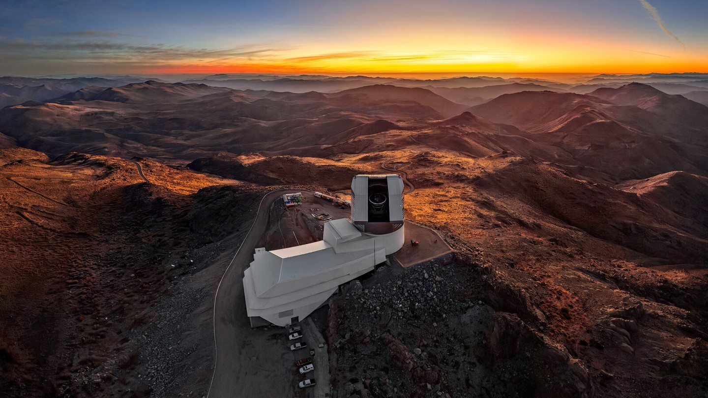

Exploración del universo con IA
Desarrollamos herramientas de inteligencia artificial, ciencia de datos y modelamiento para estudiar la formación de estrellas y planetas, las galaxias, el espacio cercano a la Tierra y los grandes volúmenes de datos producidos por observatorios de frontera.